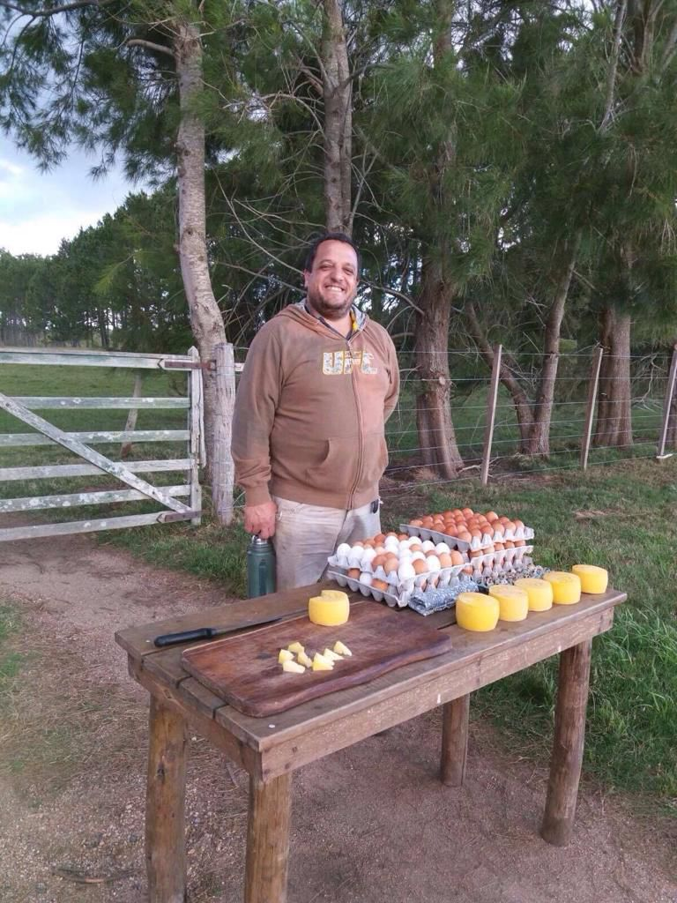
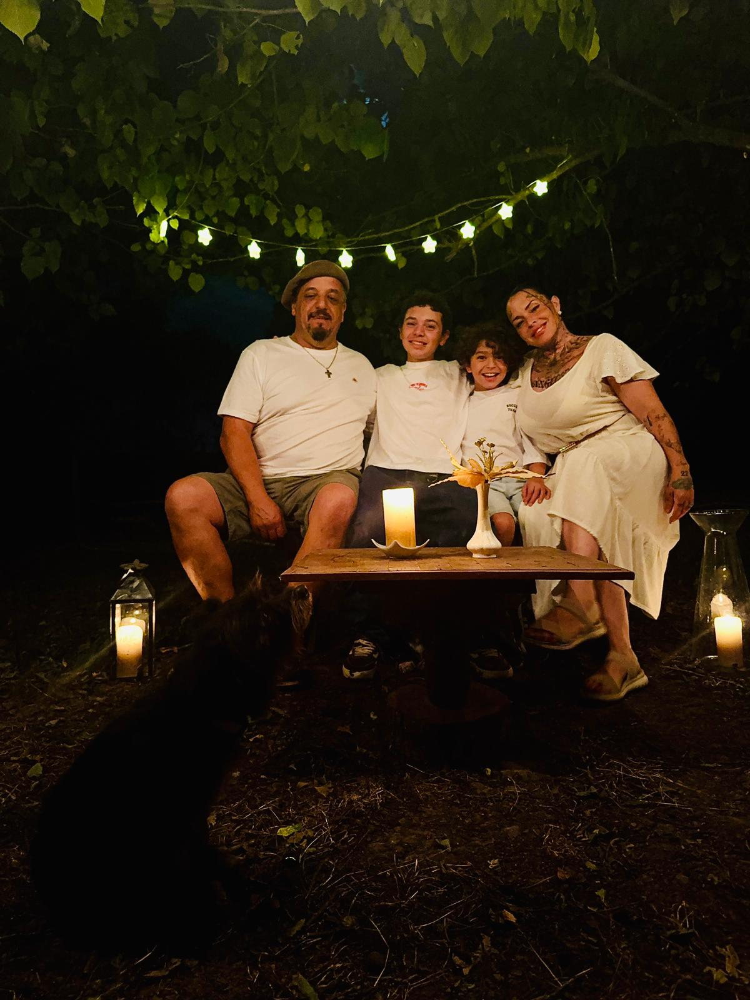
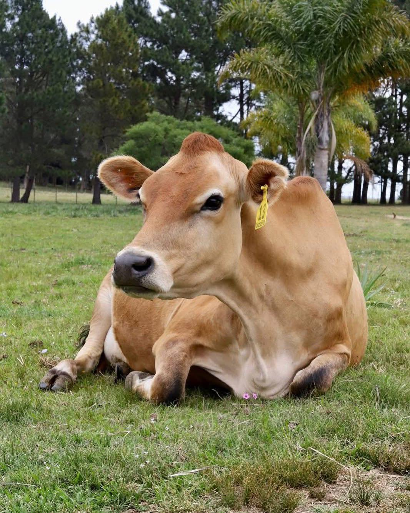
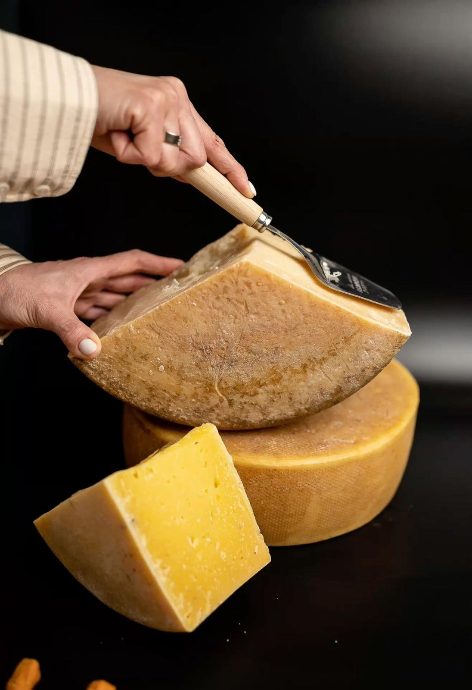
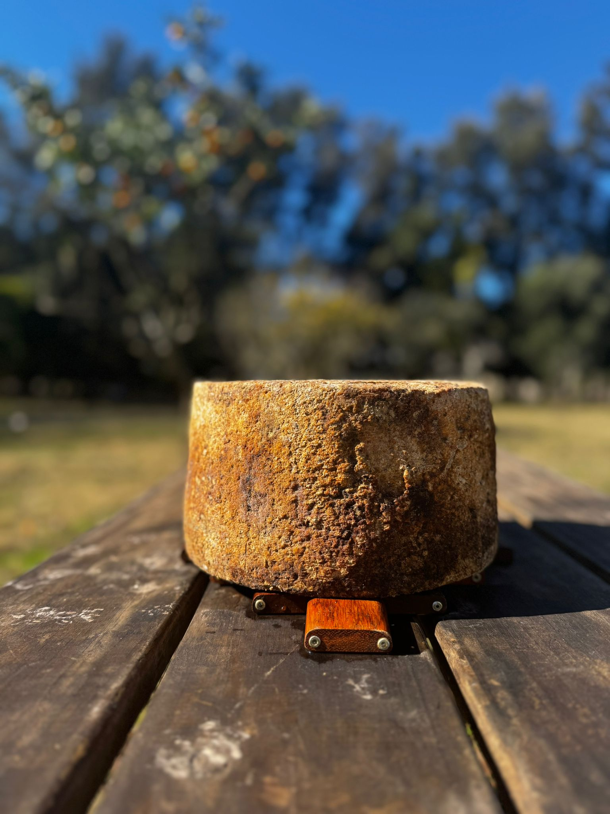
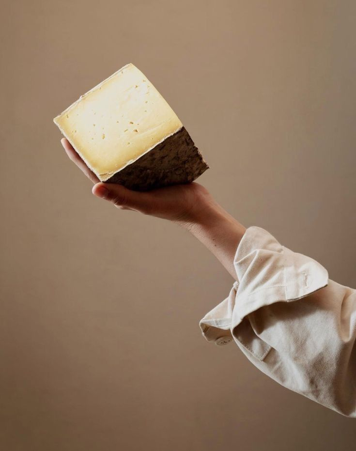
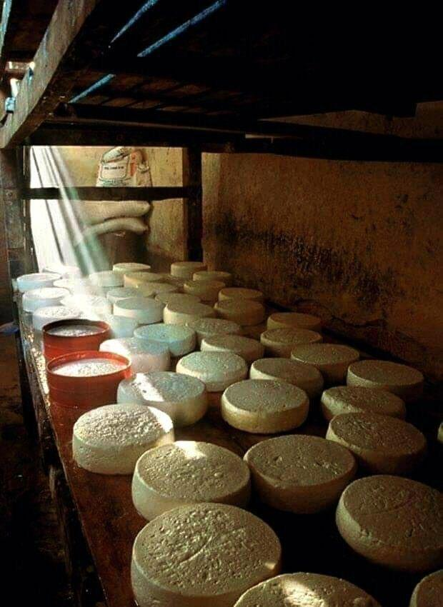
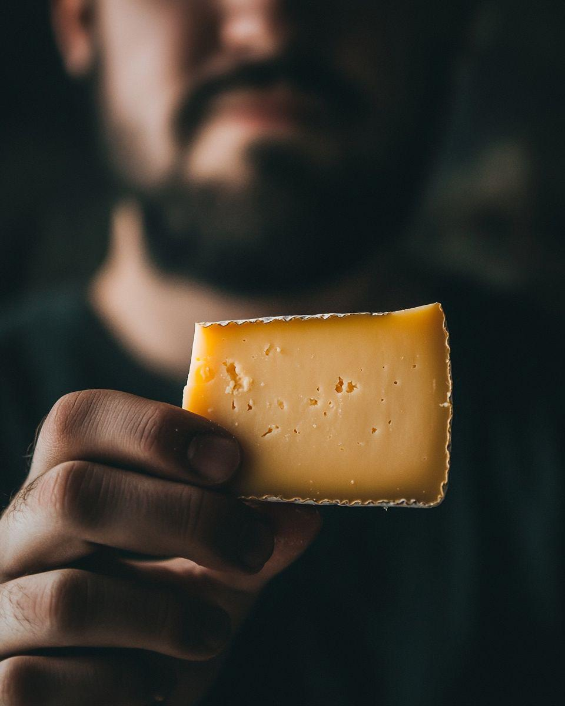
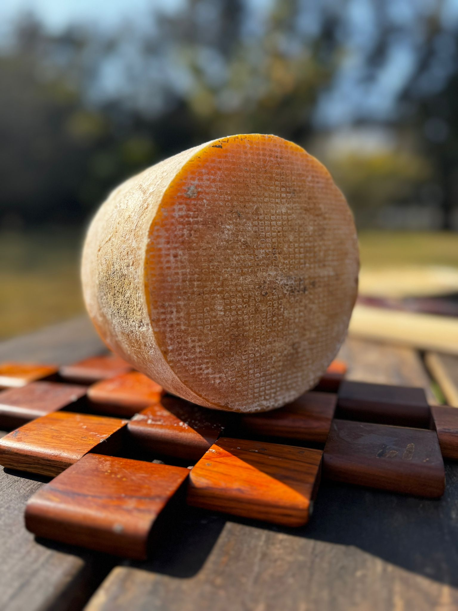
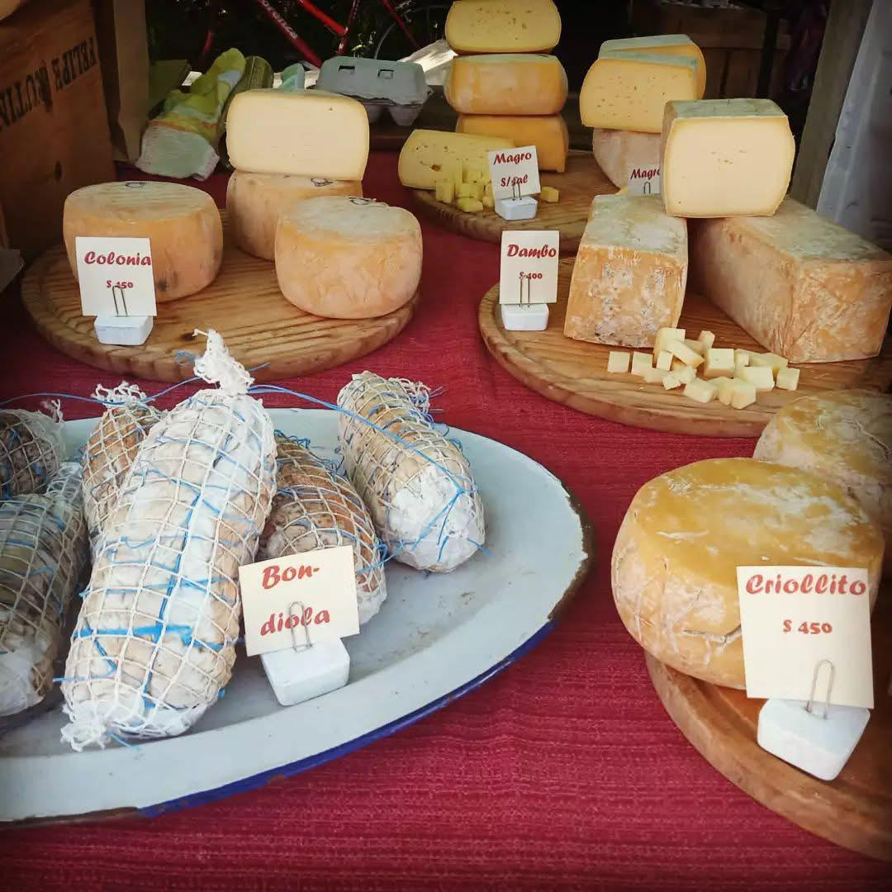

La primera mesa
Los comienzos fueron simples y honestos: quesos, huevos, dulces y productos de la chacra ofrecidos en una mesa al costado de la ruta.
Quesos artesanales y tradicion familiar
De la chacra a la mesa: quesos, miel, picadas y una historia rural contada con el corazon.
Descubrir productosNuestra historia
La Queseria Rural es una historia de familia, trabajo y amor por el campo. Nacio con una mesa sencilla en la ruta, afuera de La Portera de la Chacra, junto a la querida vaca Mochita y a los primeros clientes que confiaron en el sabor de casa.
Durante siete anos se produjo y se vendio en la misma chacra, practicando la filosofia de kilometro 0: donde producimos, vendemos. Cada queso llevaba paciencia, leche fresca y el orgullo de hacer algo propio.
Hoy esa esencia sigue intacta, pero con una mirada nueva: llevar el verdadero sabor rural a Punta del Este, sin perder la calidez de la familia ni la dedicacion artesanal.

Como empezo todo
Primero fue una mesa en la ruta, despues un contenedor y finalmente el local en pleno Gorlero. Cada paso tuvo esfuerzo, cambios importantes y una decision clara: llegar a mas corazones con productos rurales de verdad.

Los comienzos fueron simples y honestos: quesos, huevos, dulces y productos de la chacra ofrecidos en una mesa al costado de la ruta.

La querida vaca Mochita forma parte de esa memoria rural: animales mansitos, cuidados y sentidos como parte de la familia.

Afuera de La Portera de la Chacra se empezo a compartir una forma de producir cercana, natural y con identidad propia.
Durante anos se vendio donde se producia, creando un vinculo directo con vecinos, clientes y visitantes de la zona.
Ese dia se tomo la decision de cambiar, crecer y convertirse en La Queseria Rural: una marca con raiz de campo y una vision mas fresca, joven y divertida.
El contenedor en la ruta fue el puente entre la chacra y mas clientes. Una etapa intensa que preparo el salto hacia Punta del Este.
En Juan Gorlero y Las Gaviotas, al lado de Mundo de la Pizza, la queseria invita a degustar, escuchar la historia y llevarse un pedacito del campo.
Nuestros productos
Cada pieza se trabaja con leche fresca, maduracion cuidada y respeto por los tiempos del queso. Hay opciones suaves para todos los dias y piezas anejas para quienes buscan sabores profundos.
Blandos
Suaves, frescos y cremosos. Ideales para sandwiches, meriendas, recetas caseras y tablas familiares.

Semiduros
Quesos con mas cuerpo, aroma equilibrado y textura firme. Funcionan perfecto para rallar, cortar o acompanar picadas.
Duros
Madurados con paciencia para lograr intensidad, textura seca y un sabor persistente que se disfruta en pequenas porciones.

Anejos
Piezas especiales, de sabor profundo y caracter marcado, pensadas para quienes aman los quesos con historia.





Produccion natural
La miel nace de colmenas cuidadas en un entorno natural. Es pura, fresca y con ese aroma de campo que combina perfecto con quesos semiduros, anejos y panes rusticos.
La misma filosofia se repite en cada producto: hacer poco a poco, con respeto por la tierra y por quienes despues lo llevan a su mesa.
Sabores para compartir
La propuesta tambien suma picadas con quesos, salames, bondiola, panes y productos seleccionados. Son sabores pensados para compartir sin apuro, como se disfruta en el campo.
En el local se invita a probar, a conversar y a conocer la experiencia detras de cada producto. La decoracion rural, la degustacion y el chocolate caliente hacen que la visita tenga algo especial.

Nuestra esencia
Las vacas rotan por distintos suelos, dando tiempo a que el pasto se recupere y el campo crezca con mas fuerza.
La historia empezo produciendo y vendiendo en la misma chacra, con clientes vecinos y una relacion directa.
Detras de La Queseria Rural hay una familia que pone cuerpo, tiempo y corazon en cada nuevo comienzo.
Galeria




Encontranos
Hoy el sabor rural llega al centro de Punta del Este sin perder su origen: el tambo, la produccion y la vida de campo siguen en la chacra.
Local: Gorlero y la 29 (calle Las Gaviotas), Punta del Este.
Tambo y produccion: Camino Eguzquiza, La Barra.
Horario: Desde el mediodia hasta la tardecita.
Experiencia: Degustacion, productos artesanales y chocolate caliente con cada compra.
Acercate a probar quesos artesanales, miel y picadas hechas con dedicacion, tradicion y corazon rural.
Ver ubicacion